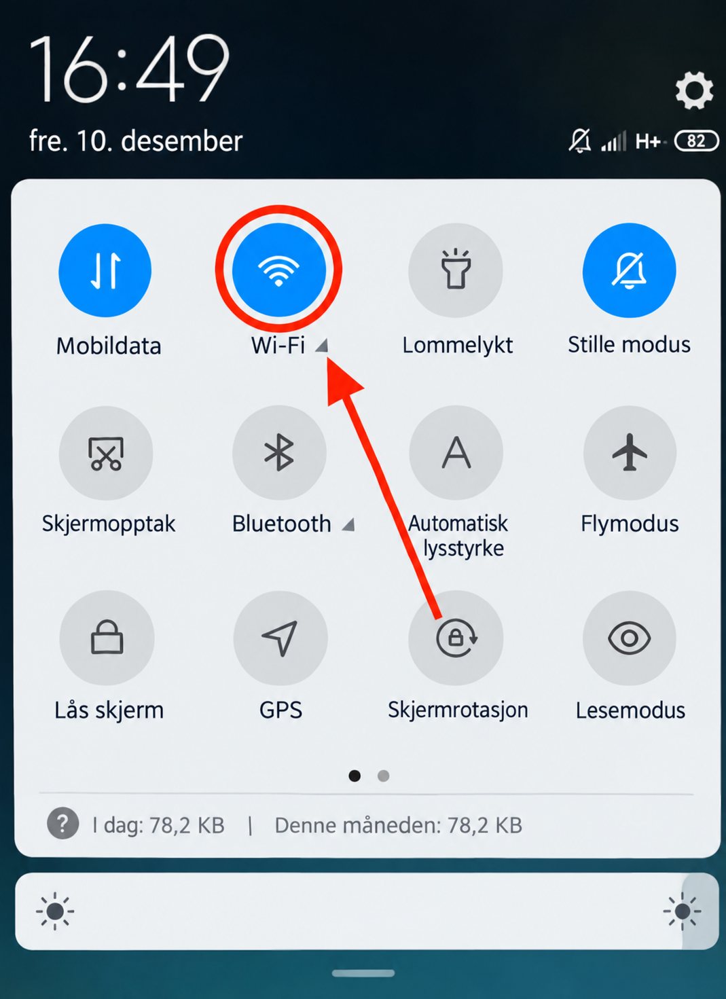
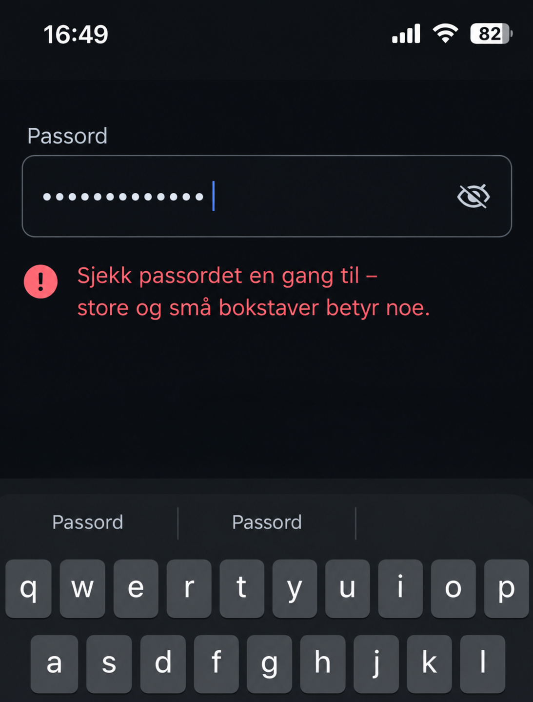
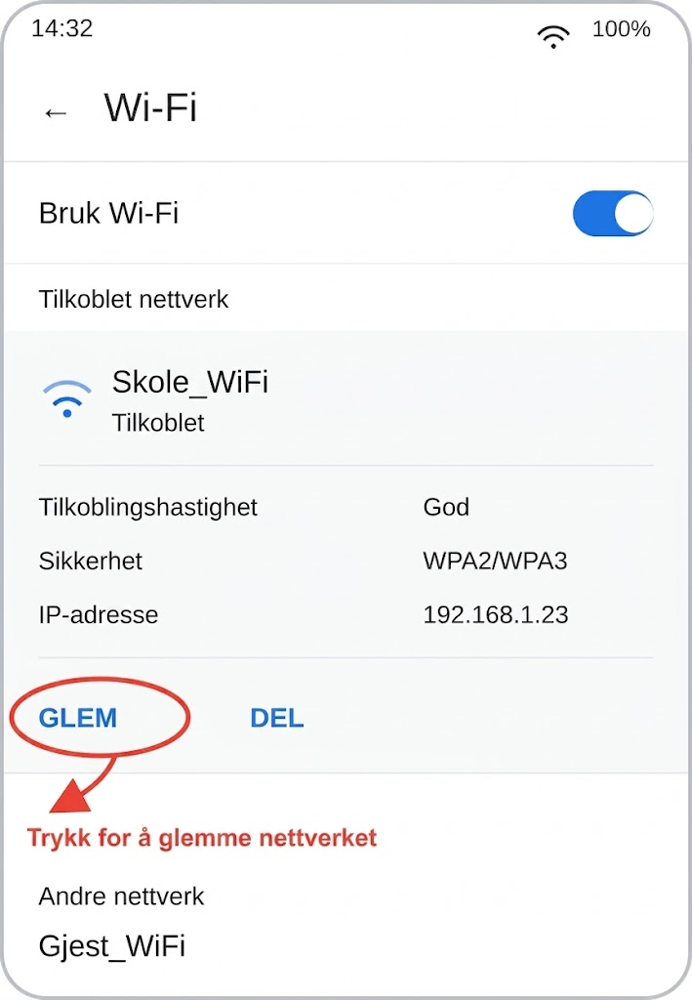
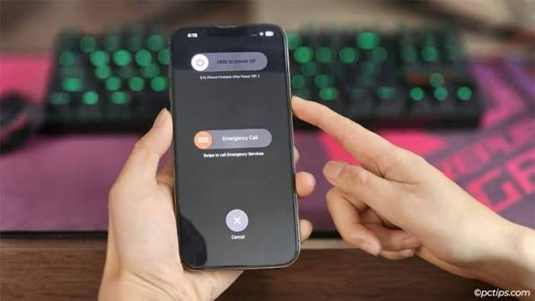

hjelp til elever og lærere
Problem
Elever og lærere på IT-rommet får ikke koblet seg til skolens Wi-Fi -
enheten viser «Ingen internettilgang» eller ber stadig om passordet på nytt.
Problemet skjer ofte og forstyrrer undervisningen: elever kan ikke levere
oppgaver på nett, og lærere kan ikke vise materiell fra internett.
Løsning - kort veiledning
- Sjekk Wi-Fi på enheten: pass på at Wi-Fi er slått på og at riktig skolenettverk er valgt.

- Sjekk passordet på nytt - store og små bokstaver har betydning.

- Glem nettverket i innstillingene og koble til på nytt med passordet fra bunnen av.

- Start enheten på nytt - noen ganger henger bare nettverksmodulen seg opp.

- Sjekk om andre har samme problem - hvis ja, ligger feilen i ruteren, ikke i enheten din.
- Hvis ingenting hjelper, ta kontakt med IT-avdelingen og oppgi romnummer, tidspunkt og hva du allerede har prøvd.